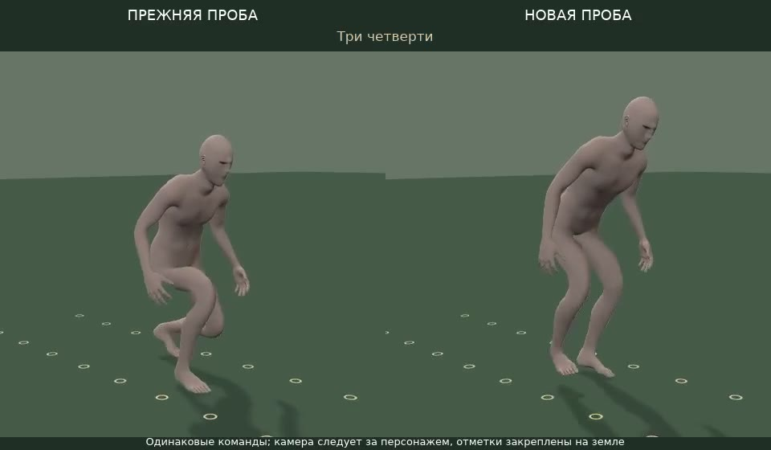
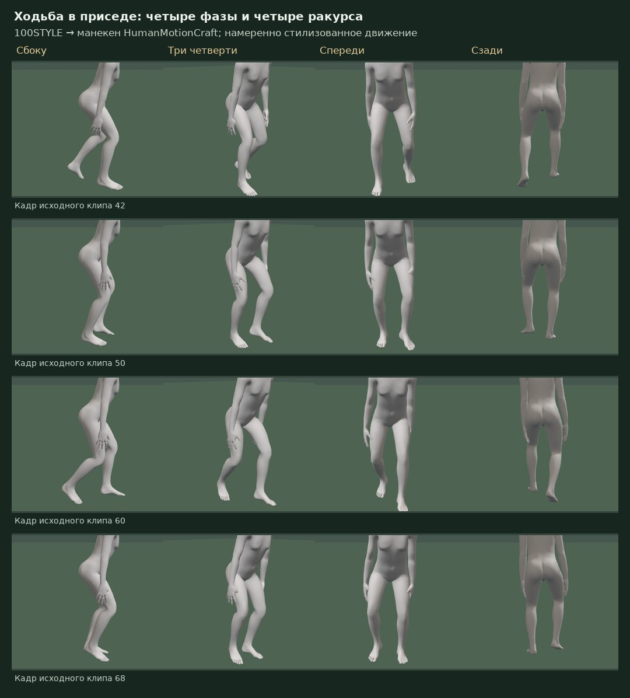
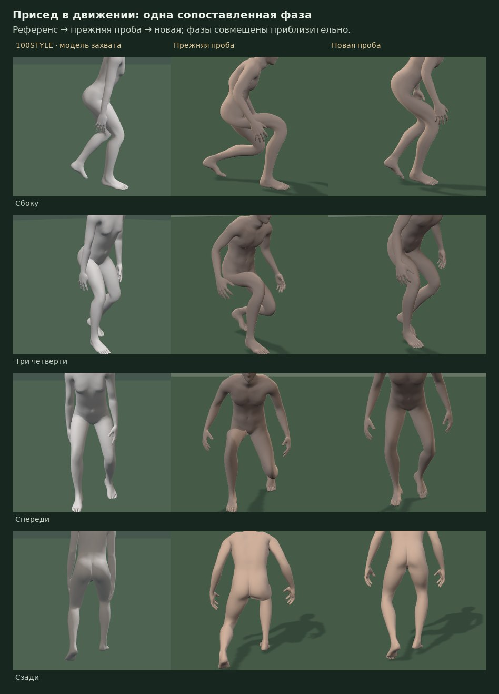
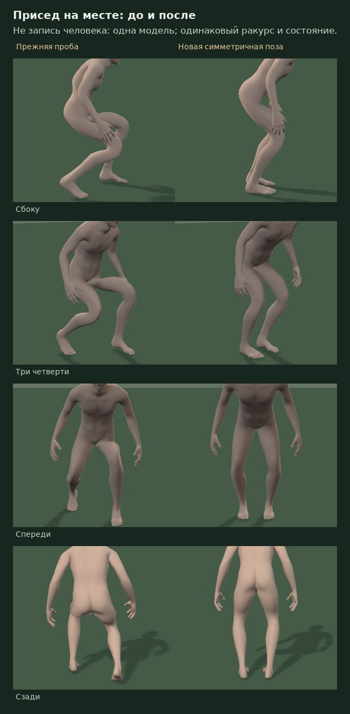
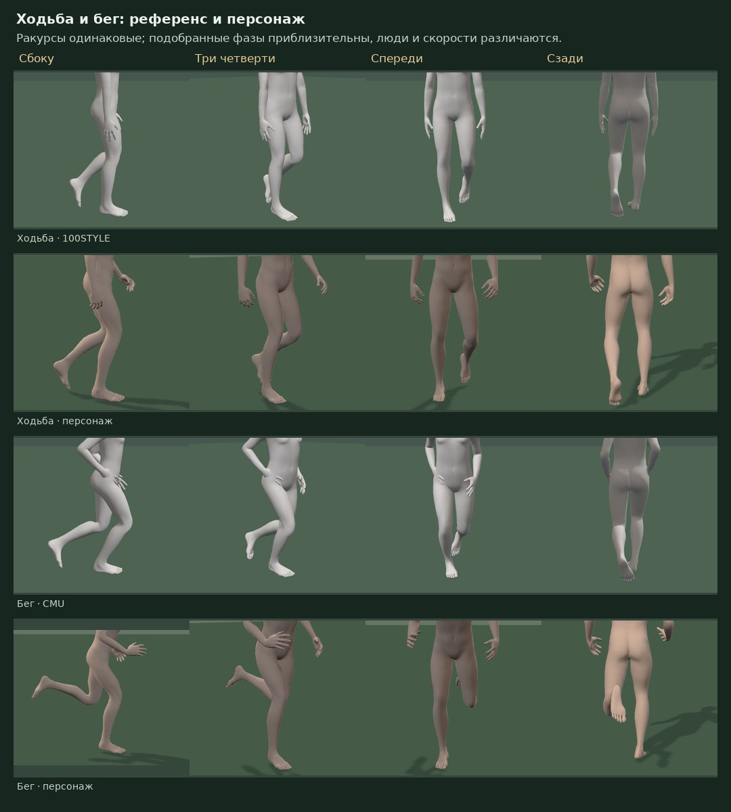
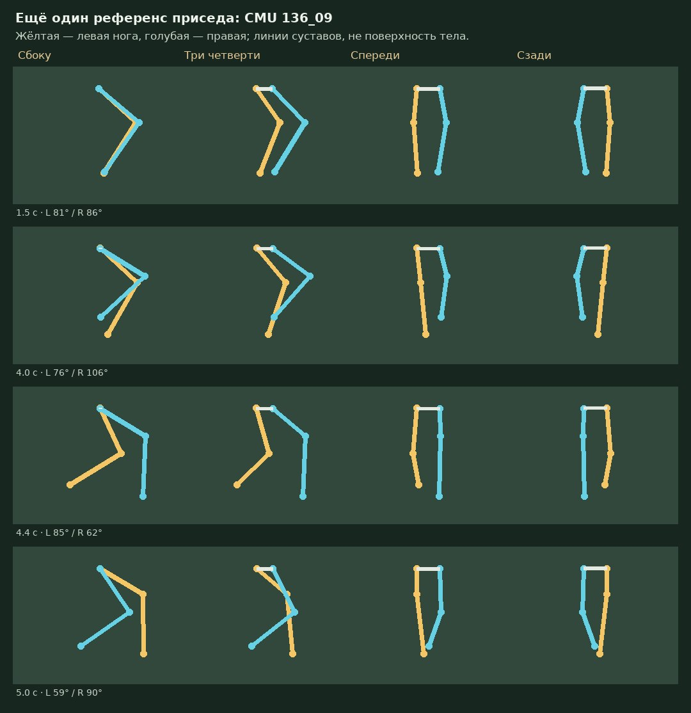

Ходьба / две камеры
Один человек, два вида
Синхронные боковая и задняя камеры: вынос ноги, постановка и отрыв стопы. OWN03, 30 кадров/с.
Открыть кадры крупнее ↗Исследование · отдельная проба
Ходьба, бег и движение в приседе: смотрим на человека с разных сторон и сравниваем с персонажем. Ниже — наблюдения и отдельный вариант анимации.
Прежняя сцена и исходная модель сохранены без изменений.

01 / До и после
Персонажи действительно перемещаются; камера следует за ними, а отметки на земле остаются на месте.
Без звука · сбоку, три четверти, спереди и сзади · отметки добавлены только для видео
02 / Реальные примеры
Отдельные кадры показывают, как меняется положение ног и стоп. Это примеры отдельных людей, а не универсальный эталон.
Синхронные боковая и задняя камеры: вынос ноги, постановка и отрыв стопы. OWN03, 30 кадров/с.
Открыть кадры крупнее ↗
Мужчина и женщина бегут на дорожке. Это разные люди, скорости и несинхронные записи.
Открыть кадры крупнее ↗Исходные видеозаписи, согласие участников и условия использования перечислены в источниках. Это не измерение сил контакта и не клиническое исследование.
03 / Четыре ракурса
Запись захвата движения перенесена на манекен: можно сравнить одни и те же фазы сбоку, в три четверти, спереди и сзади.

Это реконструкция движения на манекене, а не видео поверхности тела. Исходная запись сделана одним актёром и намеренно стилизована.
Новая проба адаптирована из этого движения: перенесены направления ног, цикл замедлен, стопы и опора дополнительно подогнаны.
Открыть все фазы крупнее ↗



Проекции суставов другого человека, не поверхность тела и не медицинская норма.
Открыть крупнее ↗04 / Выводы и границы
Это рабочий кандидат для визуальной оценки, а не гарантия естественности всех движений.
Новая стойка симметричнее. Она построена по одному кадру, а не записана как отдельное движение.
Ноги перенесены с записи человека, затем изменены подъём стопы и траектория ожидаемой опоры.
Обычные циклы в этой пробе не исправлялись: на выбранных позах они совпадают с прежней сценой.
В ограниченном прямолинейном тесте уменьшилось перемещение некоторых вершин у пола. Близость к полу не доказывает контакт: динамической фиксации стопы здесь нет, и при поворотах или переходах скольжение возможно. Физический телефон и все варианты пересечений не проверены.